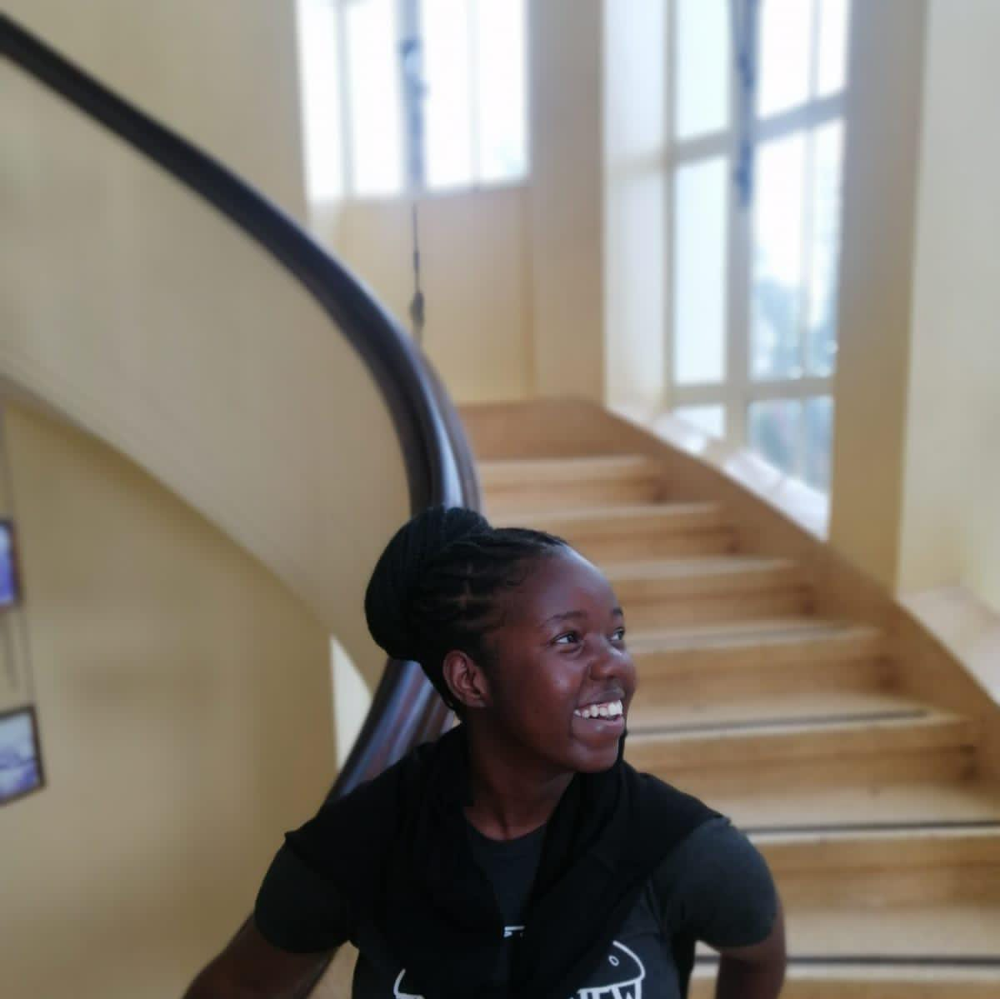

Hi, I'm Naomi Moraa Osoro
Data Analyst & Digital Solutions Developer
I build and optimize tools that enhance productivity, streamline service delivery, and improve user experience through modern technologies and data-driven problem-solving.

About Me
I am a detail-oriented IT professional with a background in Business Information Technology and practical experience developing and supporting digital workplace solutions.
My expertise lies in the Microsoft Power Platform, where I design scalable business applications, automate complex manual processes, and build interactive Power BI dashboards that enable strategic decision-making.
Technical Skills
Power Platform
- PowerApps
- Power Automate
- Power BI
Data & Databases
- Data Visualization
- MySQL
- SharePoint
Development
- Python
- PHP
- HTML & CSS
IT Operations
- Support & Help Desk
- Active Directory
- Dynamics AX
Professional Experience
Factory Support Developer
British American Tobacco, Kenya
- Designed and developed scalable business applications using PowerApps, optimizing workflows and enhancing cross-department collaboration.
- Led the automation of complex manual processes through Power Automate, driving operational efficiency and reducing errors.
- Built and maintained interactive Power BI dashboards connected to enterprise data sources, enabling real-time visibility and strategic decision-making.
Key Achievements:
- Reduced order processing time by 83% through the design and implementation of an OR Optimization Dashboard (South Africa).
- Developed a full-stack platform for reporting EHS concerns, eliminating third-party reliance and driving cost savings (Kenya).
- Automated defect tracking while preserving data integrity in Zambia.
Digital Solutions Intern
British American Tobacco, Kenya
- Developed custom business applications using PowerApps, enhancing workflow efficiency.
- Automated manual business processes with Power Automate, improving accuracy and reducing turnaround time.
- Designed and deployed Power BI dashboards integrated with live business databases.
Key Achievements:
- Implemented automated mail order process, reducing fulfillment pickup time from hours to under 1 hour.
- Developed a Quality Control Application monitoring environmental conditions, ensuring product quality and shelf life accuracy.
Data and Applications Intern
Dimension Data
Developed applications for clients using PowerApps and automated manual processes using the Power Platform. Provided support on Microsoft products.
IT Intern
Naivas Supermarket HQ
Delivered technical support for hardware, software, and networks. Managed ERP (Microsoft Dynamics AX) and user accounts via Active Directory.
Education
BSc. Business with Information Technology
Mount Kenya University
2020 - 2023